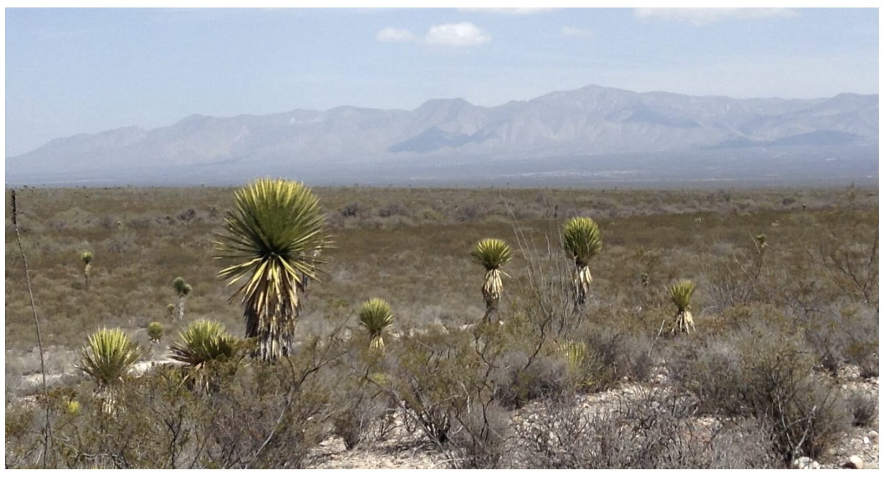

Ensayo · Filosofía existencialista
La incomodidad, ¿precio del despertar?
Una noche en Wirikuta, el Buda y el sinsentido que no se mueve
3,200 palabras~16 min de lecturaSiete tramos y coda
Resumen
Una noche en el desierto de Wirikuta, con frío, lluvia y viento, surge una objeción de economista: ¿por qué hay que pasarla mal para acercarse a algo espiritual? ¿Por qué no un techo, una silla, un buen desayuno, y entrar en paz a lo mismo?
El ensayo desarma la pregunta separando tres cosas que suelen confundirse: el sufrimiento, la incomodidad y la fricción. La respuesta del Buda —que abandonó el ayuno extremo— y la de un francés llamado Adrián coinciden sin saberlo: no hace falta sufrir; hace falta dejar de resistir. La incomodidad no es el impuesto que yo creía. Es el pizarrón.
De ahí la pieza dialoga con «Imaginar a Sísifo despierto»: ¿es la iluminación un salto, de esos que aquel ensayo condena? Se defiende que la ecuanimidad budista, entendida como método y no como fe, no salta: es una cuarta postura sobre la misma roca. Con dos cuidados: el hikuri y los dioses con nombre sí piden creer; y la ecuanimidad se pudre fácil en indiferencia.
La conclusión no consuela. El sinsentido queda intacto: la incomodidad no es necesaria y no hay avance hacia ningún lado. Pero hay un cambio posible en el que camina —menos dolor, más despierto—, y ése es el único "avance" que existió jamás para nadie. Como Tatewari bajo la lluvia: no un fuego que vence a la tormenta, sino uno que no se apaga.
I. La noche

Se prende Tatewari, el abuelo fuego. Alrededor, sentados en la tierra, comemos hikuri. El sol ya se metió —el mismo sol que nos agotó todo el día— y entonces, en cuestión de segundos, llega el frío. Me pongo una chamarra. Sin saberlo todavía, Tatewari será el eje de toda la noche: pase lo que pase, no se apagará.
Uno por uno pasamos frente al fuego a decir de qué nos queremos deshacer, qué queremos soltar. La abuela señala a otros del grupo y arma, ahí mismo, una representación de la familia del que habla; la intensidad depende de lo que cada quien vino a sanar. Yo hablo de soltar el control —esa exigencia de que todo salga como lo planeo, sin desviaciones— y de soltar a mis hijos, adolescentes: aprender que ellos toman sus propias decisiones. El silencio entre uno y otro pesa más que las palabras.
El frío aprieta. Me pongo un suéter. Las piernas se me duermen y cambio de posición todo el tiempo. Entonces empieza a llover, y sentados en la tierra el suelo va a ser lodo en minutos. Voy a mi coche por una lona grande para que varios nos sentemos encima y no sobre la tierra. Y entonces lo entiendo sin palabras: el fuego, la lluvia, el aire que empuja fuerte y la tierra vuelta lodo se han citado esta noche, cada uno en su punto máximo, y la ceremonia consiste, precisamente, en quedarse en medio de los cuatro. Aun bajo el agua, los encargados echan leña, y Tatewari no se apaga ni una vez.
Todo parece un teatro mágico —pienso en Hesse, en El lobo estepario—: un grupo entero en un estado de conciencia no ordinario, haciendo constelaciones familiares en mitad del desierto.
II. La pregunta
Después de varias horas sentado en la tierra se me duerme una pierna y me levanto. Y de pie, junto con el cuerpo, surge también una pregunta —o más bien una objeción, y es mía: no me la sopló nadie—. Soy economista: llevo la noche entera, sin querer, midiendo entradas y salidas, y esta cuenta no me cuadra. ¿Qué añade el frío? Si lo que busco es un estado —claridad, apertura, visión—, ¿por qué tendría que pasarla mal para llegar a él? El hikuri ya abrió la puerta; la medicina hace su trabajo con o sin frío. Entonces la incomodidad no es un insumo: es un impuesto que no financia ningún servicio. Un costo que no certifica nada, salvo que lo pagué.
Y la objeción tiene aliados poderosos. Una mente abrigada es una mente más clara; el dolor no expande la atención, la encoge hasta el tamaño del dolor. ¿Cómo va un cuerpo que grita "frío" a estar más disponible para lo sagrado, y no menos? Hasta el Buda comió antes de despertar —seis años de ayuno brutal, y la iluminación llegó la noche que aceptó el arroz con leche—. La idea de que hay que sufrir para merecer lo alto arrastra la superstición más antigua de todas: que a los dioses les complace vernos doler. Yo no vine a pagar una penitencia. Vine a ver.
Y aquí me hago la pregunta que de verdad me incomoda, más que el frío: ¿y si todo esto es teatro? ¿Y si sufrimos porque el rito necesita que suframos, y después llamamos "profundidad" a ese sufrimiento para justificarlo? Sería un círculo perfecto: la incomodidad no prueba nada excepto que la aguantamos, y luego la aguantada se disfraza de sabiduría. Por qué no, entonces —me digo, ya de pie, listo para ir por un techo—, por qué no una silla, una cobija, un buen desayuno, y entrar en paz a lo mismo, o a algo mejor.
III. El enviado
Con esa objeción entera y armada, empiezo a platicar con un francés que también estiraba las piernas. Se llama Adrián. Le suelto la queja completa, tal cual. Él escucha. Y cuando habla no me contradice: siente el frío y disfrútalo, me dice; ahorita hay frío, y toca. Si se te duerme una pierna, párate y camina. Si llueve, mójate tantito, huele la lluvia, huele la tierra. Sal de tu zona de confort para que se ensanche —y entonces vas a estar a gusto en más lugares, en más situaciones—. No me está pidiendo que sufra. Me está pidiendo otra cosa, con otro verbo: que deje de resistir.
Y ahí, de pie en el lodo, entiendo que mi cuenta estaba bien hecha pero mal dirigida. Yo auditaba la noche —qué le añade el frío a la visión—, y la respuesta seguía siendo ninguna: tenía razón, el frío no le suma nada a lo que veo. Pero el asiento no iba en esa columna. El frío no trabaja sobre la experiencia; trabaja sobre mí. Lo que se gana no está en la noche: está en quién se levanta de ella. La zona de confort no es un lugar al que uno llega; es un radio que uno carga, y sólo crece en su orilla —que es, por definición, el único punto donde se está incómodo.
Entonces el impuesto que yo resentía no era un impuesto. Era un gimnasio. La incomodidad no me cobraba sin darme servicio: el servicio era volverme alguien que necesita menos que las cosas estén a su gusto para estar en paz. Y —esto es lo que me desarma— es exactamente lo que Adrián describió sin ponerle nombre: lo que el budismo llama ecuanimidad. La misma noche, el mismo frío; lo único que cambia es si le agrego encima el "no quiero esto". Hay una imagen budista para esto, la de las dos flechas: el frío es la primera, la dispara la vida sola; el "que se acabe ya" es la segunda, y ésa me la clavo yo. Adrián no me quitó la primera flecha. Me enseñó a no dispararme la segunda.
No me convenció de sufrir. Nunca lo intentó. Me convenció de que yo no había entendido qué se estaba midiendo.
IV. El camino medio
Lo confirmo después, leyendo: el Buda que todos imaginan flaco de tanto ayunar, en realidad renunció a eso. Seis años se mortificó hasta poder tocarse la columna por el vientre, y estuvo a punto de morir sin haber despertado nada. Aceptó entonces un plato de arroz con leche que le ofreció una muchacha; sus cinco compañeros ascetas lo abandonaron con desprecio, por débil. Y esa misma noche, ya con el cuerpo repuesto, sentado bajo el árbol, despertó. La iluminación no llegó en el punto máximo del hambre: llegó después de comer. El hombre más despierto de la historia le habría dado la razón a mi desayuno.
Pero cuidado, que aquí es fácil cantar victoria y equivocarse. El Buda no cambió el suplicio por el sillón. Lo que encontró no es un punto tibio entre el palacio y el cilicio: es salir del eje entero. El príncipe que lo tuvo todo y el asceta que se lo negó todo cometían el mismo error en direcciones opuestas —los dos hacían que su paz dependiera de ajustar las condiciones de afuera—. A eso llamó el camino medio, y no significa "ni mucho frío ni mucho calor": significa dejar de que tu bienestar sea rehén de cuál de los dos te toca.
Y ahí caen, por fin juntas, las dos cosas que no me cabían la noche del desierto. No hace falta sufrir —tenía razón, y el Buda conmigo—. Pero sí hace falta algo de fricción —Adrián tenía razón, y el Buda también—: no como sufrimiento, sino como esa orilla donde el radio se ensancha. Confundir la fricción con el sufrimiento es el error de la media espiritualidad que vi esa noche. Y confundir el camino medio con la comodidad es el error contrario: más cómodo, y por eso más difícil de ver.
Porque ese segundo error yo ya lo conozco, y no de una ceremonia: de mi vida de todos los días. Escribí alguna vez sobre un "anti-infierno": el mundo que montamos para que nada se pierda —cada archivo versionado, cada dato trazable, todo recuperable— y que en lugar de salvarnos nos dejó un vacío difícil de nombrar. Le habíamos quitado toda la fricción, y con ella se fue lo único que le pegaba sentido a las cosas. La meditación calientita, el buen desayuno llevado al extremo, es esa misma operación un piso más arriba: optimizas la incomodidad hasta cero y optimizas de paso lo que hacía real la experiencia. Lo que no cuesta nada no se vive como sagrado.
Entonces la disyuntiva se deshace, y mi pregunta del desayuno cambia de forma. Ya no es "¿sufrir o no sufrir?" —eso quedó resuelto: no—. Es "¿cuánta fricción certifica sin destruir?". El asceta que se pasa mata el instrumento; el cómodo que se queda corto vacía el sentido. Entre los dos hay una línea, y saber dónde está no se calcula: se vive. Mi buen desayuno, desde el principio, no era una respuesta. Era esa pregunta.
V. ¿Un salto?
Hay algo que me debo a mí mismo, y es lo más incómodo de todo —más que el frío y más que el desayuno—. En otro ensayo escribí contra el salto: el "suicidio filosófico" de Kierkegaard, la fe, la Historia; contra toda salida que resuelve el sinsentido apelando a algo de afuera que no se puede verificar. Ahí me quedé con Camus: no saltar, quedarse despierto frente a la roca. Y ahora heme aquí, en un desierto, persiguiendo algo que se llama "iluminación". ¿No estoy haciendo exactamente lo que condené? ¿No es la iluminación un salto más, el más elegante de todos?
Depende de qué se venda con esa palabra. Si para despertar tengo que creer —en la reencarnación, en un yo cósmico, en un nirvana que es un más allá, en el karma como contabilidad del universo—, entonces sí, es un salto: me piden fe en algo que no puedo comprobar, y con esa fe compro el consuelo. Buena parte de lo que se ofrece como espiritualidad es justo eso. Pero hay otra cosa, y es lo que hace de la meditación de la sensación un caso raro: no hay nada que creer. Hay un diagnóstico —existe el sufrimiento— que cualquiera verifica sin fe, y hay un método —observa la sensación, no reacciones— cuyo efecto compruebas en tu propio sistema nervioso, o no lo compruebas. Sin dios, sin dogma, sin premio de ultratumba. Ven y observa, dice; no: ven y cree.
Y si eso es cierto, la iluminación no es un salto por encima del absurdo: es una práctica dentro de él. No niega que la roca vuelva a caer —eso lo sabe mejor que nadie: la primera flecha es inevitable—; cambia al que empuja. Es lo contrario del salto de Kierkegaard: él brinca fuera del vértigo hacia la fe; el meditador se queda dentro del vértigo y deja de pelear con él. Eso es la lucidez de Camus, pero con una técnica que Camus nunca tuvo. De pronto el budismo deja de ser el enemigo de mi Sísifo. Es una cuarta postura sobre la misma roca —y acaso la más interesante, porque es la única que ni salta, ni aprieta los dientes, ni actúa una alegría solar que a mí siempre me olió sospechosa. Ofrece un tercer verbo: ni saltar ni aguantar, sino dejar de resistir.
Pero esta desconfianza me la debo también, y con dos cuidados que el desierto me obliga a poner sobre la mesa. El primero: aquella noche no fue meditación pura. El hikuri es una puerta química; las constelaciones invocan toda una cosmovisión; alrededor del fuego hay dioses con nombre —Tatewari, el venado, el sol—. Eso sí pide creer, y ahí ya no puedo cobrarle a Camus ninguna coartada. Mi salida es la misma que uso frente al fuego: puedo calentarme en Tatewari sin creer que es mi abuelo. Tomar el método sin comprar la metafísica; el fuego calienta igual. El segundo cuidado es más grave: la ecuanimidad se pudre fácil en indiferencia. Dejar de reaccionar al frío es sabiduría; dejar de reaccionar al mundo es muerte en vida. Y todo mi Sísifo insiste en lo contrario —que el absurdo le devuelve el peso a esta vida, que hay que importarle a uno ferozmente—. La línea, otra vez: ecuanimidad ante la sensación, no ante lo que importa. No reaccionar al frío; sí reaccionar a la injusticia, y a mis hijos. El que deja de sufrir no puede dejar de amar. Cuando solté el control de ellos no dejé de quererlos: dejé de apretar. Esa es la ecuanimidad buena. La otra es una anestesia con incienso.
VI. ¿Qué diría Camus?
Falta la pregunta que más miedo me da hacerme, porque puede tumbar todo lo anterior: ¿qué diría Camus de esta cuarta postura? ¿La sentaría en la roca junto a la suya, o la correría por parecerse demasiado a lo que él más despreciaba, la religión?
Le concedo lo primero, y no es poco. La ecuanimidad pasa su prueba más dura: no salta. No promete otra vida, no restaura un sentido cósmico, no pide fe en nada que no puedas verificar en tu propio cuerpo. Se queda —como él exigía— en esta vida, en este frío, sin consuelo de ultratumba. En eso es más camusiana que muchos que se dicen camusianos.
Pero aquí viene el filo, y no lo voy a esconder. Camus no quería que dejáramos de sufrir el absurdo: quería que lo mantuviéramos consciente, ardiendo. Su Sísifo no está en paz con la roca; la desprecia. "Hay que imaginar a Sísifo feliz" es un desafío lanzado a los dioses, no una serenidad. Y la ecuanimidad no desafía: deja de pelear. Ahí está la grieta que separa a las dos posturas, y es real: Camus se queda dentro del vértigo con el puño en alto; el meditador se queda dentro del mismo vértigo y afloja el puño. Los dos se niegan a saltar. Difieren en el último verbo: rebelarse o soltar. Y Camus sospecharía —con razón— que soltar es una manera fina de dejar de mirar; que la ecuanimidad, llevada un paso de más, es prima del "descenso abolido" que yo mismo denuncié: quitarle el dolor al absurdo sin haber resuelto nada.
No sé quién tiene razón, y no voy a fingir que sí. Pero puedo decir dónde queda la línea, porque esa noche la marqué sin darme cuenta: soltar la sensación, no soltar lo que importa. El que deja de reaccionar al frío pero sigue reaccionando a la injusticia y a sus hijos no ha abolido ningún descenso: sigue mirando. Ésa es la ecuanimidad que Camus podría tolerar. La otra —la que deja de importarle todo— sí la condenaría, y yo con él.
VII. ¿Sirve para algún avance?
Conviene decirlo sin rodeos, porque es fácil perderse. ¿Es necesaria la incomodidad para despertar? No. Ni el Buda ni aquella noche la exigen; sirve como fricción, no como sufrimiento, y la fricción es útil, no obligatoria. ¿Y sirve para un "avance"? Aquí hay que partir la palabra en dos, porque esconde dos cosas distintas. Si "avance" significa acercarse a un destino —a un sentido, a una respuesta, a un porqué—, entonces no: no se avanza hacia nada, porque no hay hacia dónde, y en ese registro la incomodidad no sirve para nada, igual que no sirve nada. Camus tiene toda la razón: ¿avanzar hacia dónde, si todo sigue igual de mudo?
Pero hay un segundo sentido de la palabra que sí sobrevive. No avanzar hacia un lugar, sino cambiar el que camina. No un progreso vertical —hacia el sentido, que no existe—, sino un cambio horizontal, en el sujeto: menos segunda flecha, menos sufrimiento, más capacidad de estar en paz sin importar las condiciones. Eso no acerca a ninguna meta. Pero es real.
Y aquí conviene ser el abogado del diablo de uno mismo, porque la objeción es fuerte: soltar el control de mis hijos, ¿no es lo mismo que no soltarlo, sólo una experiencia distinta? En un registro, sí: no cambia ninguna de las preguntas originarias. Pero es que nada las cambia —ni soltar ni no soltar, ni meditar ni el buen desayuno, ni quedarse en casa—. Medir cualquier cosa contra "¿cambió el porqué existimos?" es medirla contra una vara que todo reprueba; y una vara que le da cero a todo no mide nada. La única vara que distingue es la del dolor: ¿menos o más? Y por esa vara, soltar no es lo mismo que apretar: mis hijos sintieron menos presión, y yo cargué menos el puño. "Una experiencia distinta de la vida" suena a poco, pero es la única cosa que alguna vez estuvo en juego.
De modo que sí: el budismo y la tradición huichola son, como sospechaba, sólo una manera de vivir el sinsentido. Pero eso no los rebaja: los nombra con honestidad, porque no hay otra cosa. Todo es una manera de vivir el sinsentido —Camus, el Buda, la religión, y el que nunca se hizo la pregunta—. No hay una postura que lo resuelva y otras que no; ninguna lo resuelve. Hay maneras que duelen más y maneras que duelen menos; maneras dormidas y maneras despiertas. Elegir entre ellas no es elegir la que llega a la meta, sino cómo caminar sabiendo que no hay meta.
Y ahí, sólo ahí, deja de importar si esto "se parece a la religión". Se parece en la parte que sobra —los dioses con nombre, la otra vida, el karma que lleva cuentas—, y esa parte, la del "porqué", sí es un salto, y hay que dejarla fuera. Pero en la parte que se queda —observar, no reaccionar, aflojar el puño sin bajar la mirada— no hay ningún porqué escondido. Es un cómo. Y un cómo no es una religión: es un oficio. Puedo calentarme en Tatewari sin creer que es mi abuelo. El fuego calienta igual, y no me pide nada a cambio.
Coda
Por eso lo dejo con esa imagen, a su tamaño exacto, sin inflarla. Esa noche llovió sobre el desierto, los encargados siguieron echando leña, y Tatewari no se apagó. No detuvo la tormenta —el sinsentido, como la lluvia, siguió cayendo igual—. No prometió que dejaría de caer. Sólo no se apagó. Eso es todo lo que ofrece la cuarta postura, y ya es mucho: no un fuego que vence a la lluvia, sino uno que arde dentro de ella. Como Sísifo: despierto, y no feliz. Ni siquiera salvado. Nada más, todavía ardiendo.
Y desconfía también de esto, por favor. Incluido yo. Puede que esta reconciliación tan redonda sea la historia bonita que me conté para poder dormir en el frío, y que Camus tenga razón y yo haya soltado el puño por cansancio y no por sabiduría. No lo sé. Pero de una cosa sí estoy seguro, y con ella cierro: el sol se va a volver a meter, el frío va a volver de golpe, la roca va a rodar hacia abajo otra vez. Y alguien va a tener que decidir cómo se sienta en la tierra mojada a esperar. Esa decisión —no la respuesta, que no existe; la decisión— es lo único que siempre fue nuestro.
Pieza hermana de Imaginar a Sísifo despierto. La roca y el umbral, la misma pregunta.